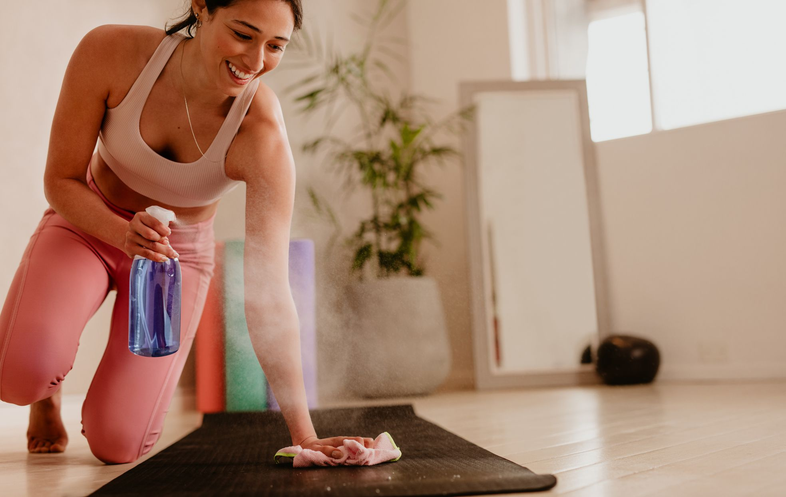

Preparation
To truly immerse yourself in the essence of yoga and elevate your practice to the next level, consider integrating the ritual of preparing dried sage. When burned, this age-old herb not only purifies the environment, but it also resonates deeply with the body and soul, creating a protective barrier against negativity and allowing practitioners to connect more profoundly with their inner self and the universe.
Fasting trainng
Yogic practice should be done on an empty stomach or light stomach. Consume small amount of honey in lukewarm water if you feel weak. Bladder and bowels should be empty before starting Yogic practices. A mattress, Yoga mat, durrie or folded blanket should be used for the practice.
Savor the Silence
Silence is key here. How often do we actually get the chance to be quiet and still, turning our thoughts inward? Give yourself this opportunity to clear space for what is to unfold. Let this silence be the punctuation at the beginning and end of your yoga practice. Prepare yourself thoroughly for yoga, and support yourself in the transition out of it and I promise you’ll feel the difference for a long time afterward.
Tips
Every one hundred pounds or so has a certain amount of muscle power, just in a particular action, some joints are restricted, resulting in the power can not be from the core to the limbs well, need to check the body's power route is smooth followed by the need for skills and more practice, rather than feel that they do not have the strength to stop practicing. Slow-motion yoga can increase basal metabolism Suitable for adjusting body shape, more inclined to functional exercise. Although it does not achieve a strong fat burning effect, it can make the body more upright and increase the basal metabolism.
Recommended Practice Videos